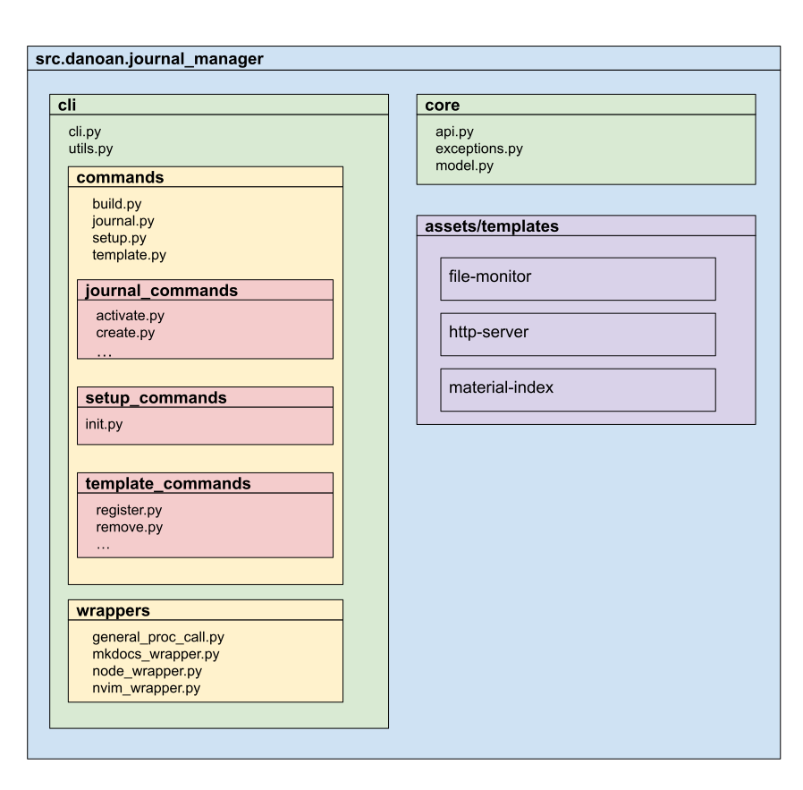
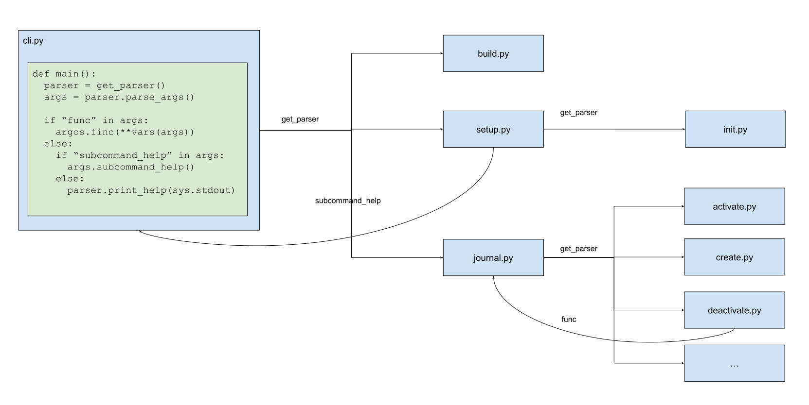
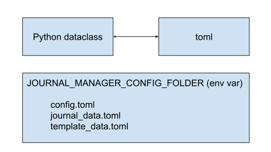

Design and Architecture
Project Organization
The project contains two packages (core and cli) and one assets folder.

core
Defines the data models, exceptions and functions to query the data model.
cli
Contains the journal-manager command-line interface.
assets
Set of static files used as templates.
Design
In this project the following designs and patterns were adopted.
Modular Parsers

Children parsers can exchange information with their parents via the set_defaults method. In the
figure above we have some examples with subcommand_help and func parameters. These export the
print help of a subcommand and the function the subcommand triggers.
This architecture has the following advantages:
Reduce cluttered code by putting the code in the most appropriated module instead of all put all logic in a single file;
Allows to call modules as independent command-line-interfaces;
Data Model
I opted to have an equivalence between file and memory representation. Each
model class has a corresponding toml file that can be manually modified by
the user.
This approach gives transparency and flexibility to the system configuration. The drawback is that it vulnerable to data corruption and inconsistencies if modified incorrectly.
The equivalence between python dataclasses and toml files is done via the package toml_dataclass

Core/Cli architecture
Separating the code in Core/Cli architecture made it unit test simpler. In the earlier
stages of development I could focus on the well functioning of the core.api methods to
later on create tests for the cli package.
Tech Stack
Development toolbox
python3.8
tox (setuptools, black, mypy, pytest, sphinx)
nvim
git + github + github-actions